目次
End-to-End Object Detection with Transformers
Nicolas Carion⋆、Francisco Massa⋆、Gabriel Synnaeve、Nicolas Usunier、Alexander Kirillov、Sergey Zagoruyko
Facebook AI
arXiv:2005.12872v3 [cs.CV]、2020年5月28日
翻訳について：原文 PDF は
03_DETR_2005.12872.pdf（全 26 ページ）。本文、図の説明、図中ラベル、表、脚注、付録を訳出し、論文タイトルと参考文献は原文のまま掲載。図は原図を掲載し、英語ラベルの日本語訳を併記した。数式・数値・引用番号・コードの識別子は原文を維持。原文の記述に関する補足は「訳注」と明示し、本文と区別している。
脚注⋆：同等の貢献。
要旨
本論文では、物体検出を直接的な集合予測問題とみなす新しい手法を提示する。我々のアプローチは検出パイプラインを簡素化し、非最大値抑制（NMS）の手続きやアンカー生成のように、タスクに関する事前知識を明示的に符号化する多くの手設計の構成要素を事実上不要にする。DEtection TRansformer、すなわち DETR と呼ぶこの新しい枠組みの主な構成要素は、二部マッチングによって一意な予測を強制する集合ベースの大域的損失と、Transformer のエンコーダ・デコーダ構造である。学習された少数の固定数の物体クエリ（object query）が与えられると、DETR は物体同士の関係と画像の大域的な文脈について推論し、最終的な予測の集合を並列に直接出力する。この新しいモデルは概念的に単純であり、他の多くの現代的な検出器とは異なり、専用のライブラリを必要としない。DETR は、難度の高い COCO 物体検出データセットにおいて、確立され高度に最適化された Faster R-CNN ベースラインと同等の精度と実行時性能を示す。さらに DETR は、統一的な方法でパノプティックセグメンテーションを出力するよう容易に一般化できる。我々は、それが競合するベースラインを大幅に上回ることを示す。学習コードと事前学習済みモデルは https://github.com/facebookresearch/detr で公開している。
1 はじめに
物体検出の目的は、関心のある各物体についてバウンディングボックスとカテゴリラベルの集合を予測することである。現代の検出器はこの集合予測タスクに間接的な方法で取り組んでおり、大量の提案領域（proposal）［37,5］、アンカー［23］、あるいはウィンドウ中心［53,46］の上に代理的な回帰問題と分類問題を定義している。それらの性能は、ほぼ重複した予測をまとめる後処理の手順、アンカー集合の設計、そして目標ボックスをアンカーに割り当てるヒューリスティクスによって大きく左右される［52］。こうしたパイプラインを簡素化するため、我々は代理タスクを迂回する直接的な集合予測のアプローチを提案する。このエンドツーエンドの考え方は、機械翻訳や音声認識のような複雑な構造化予測タスクにおいて大きな進歩をもたらしてきたが、物体検出ではまだそうなっていない。これまでの試み［43,16,4,39］は、別の形の事前知識を付け加えるか、難度の高いベンチマークにおいて強力なベースラインに匹敵することを示せていないかのいずれかである。本論文はこの隔たりを埋めることを目指す。
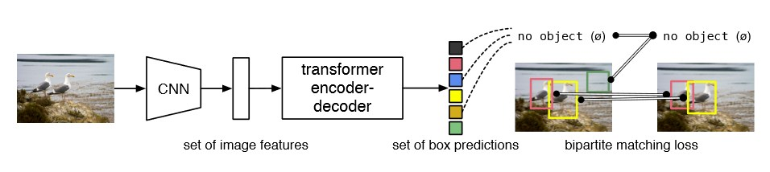
図1：DETR は、一般的な CNN と Transformer アーキテクチャを組み合わせることで、検出の最終的な集合を（並列に）直接予測する。学習時には、二部マッチングによって予測が正解ボックスに一意に割り当てられる。マッチしなかった予測は「no object」（∅）クラスの予測を出力すべきである。
図中ラベル：set of image features＝画像特徴の集合、transformer encoder-decoder＝Transformer エンコーダ・デコーダ、set of box predictions＝ボックス予測の集合、bipartite matching loss＝二部マッチング損失、no object (ø)＝物体なし（ø）
我々は、物体検出を直接的な集合予測問題とみなすことで学習パイプラインを簡素化する。系列予測で広く用いられるアーキテクチャである Transformer［47］に基づくエンコーダ・デコーダ構造を採用する。Transformer の自己注意機構は系列内の要素間のあらゆるペアの相互作用を明示的にモデル化するため、重複予測の除去のような集合予測特有の制約に特に適している。
我々の DEtection TRansformer（DETR、図1参照）はすべての物体を一度に予測し、予測された物体と正解物体の間で二部マッチングを行う集合損失関数によってエンドツーエンドで学習される。DETR は、空間的なアンカーや非最大値抑制のように事前知識を符号化する複数の手設計の構成要素を取り除くことで、検出パイプラインを簡素化する。既存の大半の検出手法とは異なり、DETR は特別にカスタマイズされた層を一切必要としないため、標準的な CNN と Transformer のクラスを含む任意のフレームワークで容易に再現できる1。
脚注1：本研究では、標準的な深層学習ライブラリに含まれる Transformer［47］と ResNet［15］のバックボーンの標準実装を用いている。
直接的な集合予測に関するこれまでの研究の大半と比べると、DETR の主な特徴は、二部マッチング損失と、（非自己回帰的な）並列デコーディングを行う Transformer との組み合わせにある［29,12,10,8］。これに対し、これまでの研究は RNN による自己回帰的なデコーディングに焦点を当てていた［43,41,30,36,42］。我々のマッチング損失関数は、予測を正解物体に一意に割り当て、予測された物体の順列に対して不変であるため、それらを並列に出力できる。
我々は DETR を、最も広く使われている物体検出データセットの一つである COCO［24］において、非常に強力な Faster R-CNN ベースライン［37］と比較して評価する。Faster R-CNN は数多くの設計の改良を経ており、その性能は最初の発表以来大きく向上している。実験により、我々の新しいモデルが同等の性能を達成することが示される。より正確には、DETR は大きな物体に対して著しく優れた性能を示すが、これはおそらく Transformer の非局所的な計算によって可能になった結果である。一方で、小さな物体に対する性能は劣る。この点は、FPN［22］が Faster R-CNN に対して果たしたのと同じように、今後の研究によって改善されることを期待している。
DETR の学習設定は、標準的な物体検出器とは複数の点で異なる。この新しいモデルは非常に長い学習スケジュールを必要とし、Transformer における補助的なデコーディング損失の恩恵を受ける。我々は、示された性能にとってどの構成要素が決定的に重要であるかを徹底的に調べる。
DETR の設計思想は、より複雑なタスクにも容易に拡張できる。実験では、事前学習済みの DETR の上で学習した単純なセグメンテーションヘッドが、近年注目を集めている難度の高いピクセルレベルの認識タスクであるパノプティックセグメンテーション［19］において、競合するベースラインを上回ることを示す。
2 関連研究
本研究は、いくつかの分野における先行研究の上に成り立っている。すなわち、集合予測のための二部マッチング損失、Transformer に基づくエンコーダ・デコーダ構造、並列デコーディング、そして物体検出手法である。
2.1 集合予測
集合を直接予測するための標準的な深層学習モデルは存在しない。基本的な集合予測タスクはマルチラベル分類（コンピュータビジョンの文脈における文献としては、例えば［40,33］を参照）であるが、そのベースライン手法である one-vs-rest は、要素間に潜在的な構造（すなわち、ほぼ同一のボックス）がある検出のような問題には適用できない。こうしたタスクにおける第一の難しさは、ほぼ重複した予測を避けることである。現在の検出器の大半はこの問題に対処するために非最大値抑制のような後処理を用いるが、直接的な集合予測は後処理を必要としない。冗長性を避けるためには、予測されたすべての要素間の相互作用をモデル化する大域的な推論方式が必要である。固定サイズの集合予測には、密な全結合ネットワーク［9］で十分だがコストが高い。一般的なアプローチは、再帰型ニューラルネットワーク［48］のような自己回帰的な系列モデルを用いることである。いずれの場合も、損失関数は予測の順列に対して不変であるべきである。通常の解決策は、正解と予測の間の二部マッチングを見つけるために、ハンガリアン法（Hungarian algorithm）［20］に基づく損失を設計することである。これにより順列不変性が強制され、各目標要素が一意なマッチを持つことが保証される。我々も二部マッチング損失のアプローチに従う。しかし、先行研究の大半とは対照的に、我々は自己回帰モデルから離れ、以下で述べる並列デコーディングを行う Transformer を用いる。
2.2 Transformer と並列デコーディング
Transformer は、機械翻訳のための注意機構に基づく新しい構成ブロックとして Vaswani et al.［47］によって導入された。注意機構［2］は、入力系列全体から情報を集約するニューラルネットワークの層である。Transformer は自己注意層を導入した。自己注意層は Non-Local Neural Networks［49］と同様に、系列の各要素を走査し、系列全体から情報を集約することでその要素を更新する。注意機構に基づくモデルの主な利点の一つは、その大域的な計算と完全な記憶であり、これにより長い系列に対して RNN よりも適している。Transformer は現在、自然言語処理、音声処理、コンピュータビジョンの多くの問題において RNN に取って代わりつつある［8,27,45,34,31］。
Transformer は当初、初期の系列変換（sequence-to-sequence）モデル［44］にならって自己回帰モデルとして用いられ、出力トークンを一つずつ生成していた。しかし、推論コストが法外に大きい（出力長に比例し、バッチ化が難しい）ことから、音声［29］、機械翻訳［12,10］、単語表現学習［8］、さらに最近では音声認識［6］の分野で並列的な系列生成が開発されるに至った。我々もまた、計算コストと、集合予測に必要な大域的計算を行う能力との間のトレードオフが適切であることから、Transformer と並列デコーディングを組み合わせる。
2.3 物体検出
現代の物体検出手法の大半は、何らかの初期推定に対する相対値として予測を行う。2 段階検出器［37,5］は提案領域に対するボックスを予測し、1 段階手法はアンカー［23］あるいは物体中心の候補のグリッド［53,46］に対して予測を行う。最近の研究［52］は、これらのシステムの最終的な性能が、こうした初期推定をどのように設定するかに大きく依存することを示している。我々のモデルでは、この手作業による処理を取り除き、アンカーではなく入力画像に対する絶対的なボックス予測によって検出の集合を直接予測することで、検出処理を簡素化できる。
集合ベースの損失。いくつかの物体検出器［9,25,35］は二部マッチング損失を用いていた。しかし、こうした初期の深層学習モデルでは、異なる予測間の関係は畳み込み層または全結合層のみでモデル化されており、手設計の NMS 後処理によってその性能を向上させることができた。より最近の検出器［37,23,53］は、正解と予測の間の一意でない割り当て規則を NMS と組み合わせて用いている。
学習可能な NMS 手法［16,4］や relation network［17］は、注意機構によって異なる予測間の関係を明示的にモデル化する。これらは直接的な集合損失を用いるため、いかなる後処理の手順も必要としない。しかし、これらの手法は検出間の関係を効率的にモデル化するために、提案ボックスの座標のような追加の手作りの文脈特徴を用いている。一方、我々はモデルに符号化される事前知識を減らす解決策を求めている。
再帰型検出器。我々のアプローチに最も近いのは、物体検出［43］およびインスタンスセグメンテーション［41,30,36,42］のためのエンドツーエンドの集合予測である。我々と同様に、これらは CNN の活性化に基づくエンコーダ・デコーダ構造とともに二部マッチング損失を用い、バウンディングボックスの集合を直接生成する。しかしこれらのアプローチは、小規模なデータセットでのみ評価されており、現代的なベースラインとは比較されていない。特に、これらは自己回帰モデル（より正確には RNN）に基づいているため、並列デコーディングを行う近年の Transformer を活用していない。
3 DETR モデル
検出における直接的な集合予測には、二つの要素が不可欠である。（1）予測ボックスと正解ボックスの間に一意なマッチングを強制する集合予測損失、（2）（1 回の順伝播で）物体の集合を予測し、それらの関係をモデル化するアーキテクチャ、である。我々のアーキテクチャについては図2で詳しく説明する。
3.1 物体検出の集合予測損失
DETR は、デコーダを 1 回通すだけで、固定サイズ \(N\) 個の予測の集合を推論する。ここで \(N\) は、画像中の典型的な物体数よりも大幅に大きく設定される。学習における主な難しさの一つは、予測された物体（クラス、位置、サイズ）を正解に対して評価することである。我々の損失は、予測物体と正解物体の間の最適な二部マッチングを生成し、その後、物体ごとの（バウンディングボックスの）損失を最適化する。
物体の正解集合を \(y\)、\(N\) 個の予測の集合を \(\hat{y} = \{\hat{y}_i\}_{i=1}^{N}\) と表す。\(N\) が画像中の物体数より大きいと仮定し、\(y\) も ∅（物体なし）で埋めたサイズ \(N\) の集合とみなす。これら二つの集合の間の二部マッチングを見つけるため、コストが最小となる \(N\) 要素の順列 \(\sigma \in \mathfrak{S}_N\) を探索する。
\[ \hat{\sigma} = \underset{\sigma \in \mathfrak{S}_N}{\arg\min} \sum_{i}^{N} \mathcal{L}_{\text{match}}(y_i, \hat{y}_{\sigma(i)}), \tag{1} \]
ここで \(\mathcal{L}_{\text{match}}(y_i, \hat{y}_{\sigma(i)})\) は、正解 \(y_i\) とインデックス \(\sigma(i)\) の予測との間のペアごとのマッチングコストである。この最適な割り当ては、先行研究（例えば［43］）にならい、ハンガリアン法によって効率的に計算される。
マッチングコストは、クラス予測と、予測ボックスと正解ボックスの類似度の両方を考慮する。正解集合の各要素 \(i\) は \(y_i = (c_i, b_i)\) とみなすことができる。ここで \(c_i\) は目標クラスラベル（∅ の場合もある）であり、\(b_i \in [0,1]^4\) は正解ボックスの中心座標と、画像サイズに対する相対的な高さと幅を定めるベクトルである。インデックス \(\sigma(i)\) の予測について、クラス \(c_i\) の確率を \(\hat{p}_{\sigma(i)}(c_i)\)、予測ボックスを \(\hat{b}_{\sigma(i)}\) と定義する。これらの記法を用いて、\(\mathcal{L}_{\text{match}}(y_i, \hat{y}_{\sigma(i)})\) を \(-\mathbb{1}_{\{c_i \neq \varnothing\}} \hat{p}_{\sigma(i)}(c_i) + \mathbb{1}_{\{c_i \neq \varnothing\}} \mathcal{L}_{\text{box}}(b_i, \hat{b}_{\sigma(i)})\) と定義する。
マッチングを求めるこの手続きは、現代の検出器において提案領域［37］やアンカー［22］を正解物体にマッチさせるために用いられるヒューリスティックな割り当て規則と同じ役割を果たす。主な違いは、直接的な集合予測のために、重複のない一対一のマッチングを見つける必要があることである。
第二のステップは、前のステップでマッチしたすべてのペアについて損失関数、すなわちハンガリアン損失を計算することである。損失は一般的な物体検出器の損失と同様に定義する。すなわち、クラス予測に対する負の対数尤度と、後で定義するボックス損失との線形結合である。
\[ \mathcal{L}_{\text{Hungarian}}(y, \hat{y}) = \sum_{i=1}^{N} \left[ -\log \hat{p}_{\hat{\sigma}(i)}(c_i) + \mathbb{1}_{\{c_i \neq \varnothing\}} \mathcal{L}_{\text{box}}(b_i, \hat{b}_{\hat{\sigma}}(i)) \right], \tag{2} \]
（訳注：式(2)の \(\hat{b}_{\hat{\sigma}}(i)\) は原文の表記どおり。文脈上は \(\hat{b}_{\hat{\sigma}(i)}\) の意と考えられる。）
ここで \(\hat{\sigma}\) は第一のステップ（1）で計算された最適な割り当てである。実際には、クラスの不均衡を考慮して、\(c_i = \varnothing\) のときの対数確率の項を 10 分の 1 に重み付けを下げる。これは、Faster R-CNN の学習手続きがサブサンプリングによって正例と負例の提案領域のバランスをとる方法［37］に類似している。物体と ∅ の間のマッチングコストは予測に依存しないこと、つまりその場合のコストは定数であることに注意されたい。マッチングコストでは、対数確率の代わりに確率 \(\hat{p}_{\hat{\sigma}(i)}(c_i)\) を用いる。これにより、クラス予測の項が \(\mathcal{L}_{\text{box}}(\cdot,\cdot)\)（後述）と同じ尺度になり、経験的にもより良い性能が観察された。
バウンディングボックス損失。マッチングコストとハンガリアン損失の第二の部分は、バウンディングボックスを評価する \(\mathcal{L}_{\text{box}}(\cdot)\) である。何らかの初期推定に対する差分 \(\Delta\) としてボックスを予測する多くの検出器とは異なり、我々はボックスを直接予測する。このようなアプローチは実装を簡素化するが、損失の相対的なスケールに関する問題を生じる。最もよく用いられる \(\ell_1\) 損失は、相対誤差が同程度であっても、小さなボックスと大きなボックスとでスケールが異なってしまう。この問題を緩和するため、我々は \(\ell_1\) 損失と、スケール不変な一般化 IoU 損失［38］\(\mathcal{L}_{\text{iou}}(\cdot,\cdot)\) との線形結合を用いる。全体として、我々のボックス損失 \(\mathcal{L}_{\text{box}}(b_i, \hat{b}_{\sigma(i)})\) は \(\lambda_{\text{iou}} \mathcal{L}_{\text{iou}}(b_i, \hat{b}_{\sigma(i)}) + \lambda_{\text{L1}} ||b_i - \hat{b}_{\sigma(i)}||_1\) と定義される。ここで \(\lambda_{\text{iou}}, \lambda_{\text{L1}} \in \mathbb{R}\) はハイパーパラメータである。これら二つの損失は、バッチ内の物体数で正規化される。
3.2 DETR のアーキテクチャ
DETR の全体的なアーキテクチャは驚くほど単純であり、図2に示す。これは三つの主要な構成要素からなり、以下でそれぞれを説明する。すなわち、コンパクトな特徴表現を抽出する CNN バックボーン、エンコーダ・デコーダ Transformer、そして最終的な検出予測を行う単純なフィードフォワードネットワーク（FFN）である。
多くの現代的な検出器とは異なり、DETR は、一般的な CNN バックボーンと Transformer アーキテクチャの実装を提供する任意の深層学習フレームワークにおいて、わずか数百行で実装できる。DETR の推論コードは PyTorch［32］で 50 行未満で実装できる。我々の手法の単純さが、新たな研究者を検出のコミュニティに惹きつけることを期待している。
バックボーン。初期画像 \(x_{\text{img}} \in \mathbb{R}^{3 \times H_0 \times W_0}\)（3 つの色チャネル2を持つ）から出発し、従来の CNN バックボーンがより低解像度の活性化マップ \(f \in \mathbb{R}^{C \times H \times W}\) を生成する。我々が用いる典型的な値は \(C = 2048\) および \(H, W = \frac{H_0}{32}, \frac{W_0}{32}\) である。
脚注2：入力画像はバッチにまとめられ、すべてがバッチ内で最大の画像と同じ寸法 \((H_0, W_0)\) になるよう、適切に 0 パディングが施される。
Transformer エンコーダ。まず、1x1 畳み込みによって、高レベルの活性化マップ \(f\) のチャネル次元を \(C\) からより小さい次元 \(d\) に削減し、新しい特徴マップ \(z_0 \in \mathbb{R}^{d \times H \times W}\) を作る。エンコーダは入力として系列を想定しているため、\(z_0\) の空間次元を 1 次元に畳み込み、\(d \times HW\) の特徴マップを得る。各エンコーダ層は標準的なアーキテクチャを持ち、マルチヘッド自己注意モジュールとフィードフォワードネットワーク（FFN）からなる。Transformer アーキテクチャは順列不変であるため、各注意層の入力に加算される固定の位置エンコーディング［31,3］でこれを補う。アーキテクチャの詳細な定義は補足資料に譲るが、それは［47］で記述されたものに従っている。
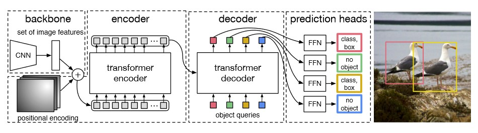
図2：DETR は従来の CNN バックボーンを用いて入力画像の 2 次元表現を学習する。モデルはそれを平坦化し、位置エンコーディングで補ってから Transformer エンコーダに渡す。次に Transformer デコーダは、我々が物体クエリと呼ぶ、学習された少数の固定数の位置埋め込みを入力として受け取り、さらにエンコーダの出力に注意を向ける。デコーダの各出力埋め込みは共有のフィードフォワードネットワーク（FFN）に渡され、FFN は検出（クラスとバウンディングボックス）または「no object」クラスのいずれかを予測する。
図中ラベル：backbone＝バックボーン、set of image features＝画像特徴の集合、positional encoding＝位置エンコーディング、encoder＝エンコーダ、transformer encoder＝Transformer エンコーダ、decoder＝デコーダ、transformer decoder＝Transformer デコーダ、object queries＝物体クエリ、prediction heads＝予測ヘッド、class, box＝クラス、ボックス、no object＝物体なし
Transformer デコーダ。デコーダは Transformer の標準的なアーキテクチャに従い、マルチヘッドの自己注意機構およびエンコーダ・デコーダ注意機構を用いて、サイズ \(d\) の \(N\) 個の埋め込みを変換する。元の Transformer との違いは、我々のモデルが各デコーダ層で \(N\) 個の物体を並列にデコードするのに対し、Vaswani et al.［47］は出力系列を一度に 1 要素ずつ予測する自己回帰モデルを用いている点である。これらの概念に馴染みのない読者は補足資料を参照されたい。デコーダもまた順列不変であるため、異なる結果を生成するには \(N\) 個の入力埋め込みが互いに異なっていなければならない。これらの入力埋め込みは、我々が物体クエリと呼ぶ学習された位置エンコーディングであり、エンコーダと同様に、各注意層の入力に加算する。\(N\) 個の物体クエリはデコーダによって出力埋め込みに変換される。それらは次に、フィードフォワードネットワーク（次の小節で説明）によって独立にボックス座標とクラスラベルへとデコードされ、\(N\) 個の最終的な予測となる。これらの埋め込みに対する自己注意とエンコーダ・デコーダ注意を用いることで、モデルは画像全体を文脈として利用しつつ、物体間のペアごとの関係を用いてすべての物体について大域的に一括して推論する。
予測フィードフォワードネットワーク（FFN）。最終的な予測は、ReLU 活性化関数と隠れ次元 \(d\) を持つ 3 層パーセプトロンと、線形射影層によって計算される。FFN は入力画像に対するボックスの正規化された中心座標、高さ、幅を予測し、線形層はソフトマックス関数を用いてクラスラベルを予測する。我々は固定サイズ \(N\) 個のバウンディングボックスの集合を予測し、\(N\) は通常、画像中の実際の関心物体数よりもはるかに大きいため、スロット内で物体が検出されなかったことを表すための追加の特別なクラスラベル ∅ を用いる。このクラスは、標準的な物体検出アプローチにおける「背景」クラスと同様の役割を果たす。
補助デコーディング損失。学習時にデコーダで補助損失［1］を用いることが、特にモデルが各クラスの物体の正しい個数を出力する助けとして有用であることがわかった。各デコーダ層の後に予測 FFN とハンガリアン損失を追加する。すべての予測 FFN はパラメータを共有する。異なるデコーダ層から予測 FFN への入力を正規化するために、追加の共有 layer-norm を用いる。
4 実験
我々は、COCO における定量評価において DETR が Faster R-CNN と比較して競争力のある結果を達成することを示す。次に、アーキテクチャと損失に関する詳細なアブレーション研究を、考察と定性的な結果とともに示す。最後に、DETR が汎用的で拡張性の高いモデルであることを示すため、固定された DETR モデルの上で小さな拡張部分のみを学習したパノプティックセグメンテーションの結果を示す。実験を再現するためのコードと事前学習済みモデルを https://github.com/facebookresearch/detr で提供している。
データセット。実験は COCO 2017 の検出およびパノプティックセグメンテーションのデータセット［24,18］で行う。これらは 11.8 万枚の学習画像と 5 千枚の検証画像を含む。各画像にはバウンディングボックスとパノプティックセグメンテーションのアノテーションが付与されている。画像あたり平均 7 インスタンスがあり、学習セットでは 1 枚の画像に最大 63 インスタンスが含まれ、同じ画像の中に小さなものから大きなものまで存在する。特に断らない限り、AP は bbox AP、すなわち複数の閾値にわたる積分指標として報告する。Faster R-CNN との比較では最後の学習エポックにおける検証 AP を報告し、アブレーションでは最後の 10 エポックの検証結果の中央値を報告する。
技術的詳細。DETR は AdamW［26］で学習し、Transformer の初期学習率を \(10^{-4}\)、バックボーンの初期学習率を \(10^{-5}\)、重み減衰を \(10^{-4}\) に設定する。Transformer のすべての重みは Xavier 初期化［11］で初期化し、バックボーンは TORCHVISION の ImageNet 事前学習済み ResNet モデル［15］で、バッチ正規化層を凍結して用いる。2 種類のバックボーン、ResNet-50 と ResNet-101 による結果を報告する。対応するモデルをそれぞれ DETR、DETR-R101 と呼ぶ。［21］にならい、バックボーンの最終ステージに膨張（dilation）を加え、このステージの最初の畳み込みからストライドを取り除くことで、特徴の解像度も高める。対応するモデルをそれぞれ DETR-DC5、DETR-DC5-R101（膨張 C5 ステージ）と呼ぶ。この変更により解像度は 2 倍になり、小さな物体に対する性能が向上するが、その代償としてエンコーダの自己注意のコストが 16 倍になり、全体の計算コストは 2 倍に増加する。これらのモデルと Faster R-CNN の FLOPs の完全な比較を表1に示す。
スケール拡張を用い、入力画像の最短辺が 480 ピクセル以上 800 ピクセル以下、最長辺が最大 1333 ピクセルとなるようにリサイズする［50］。エンコーダの自己注意を通じて大域的な関係の学習を助けるため、学習時にはランダムクロップ拡張も適用し、これにより性能が約 1 AP 向上する。具体的には、学習画像を確率 0.5 でランダムな矩形パッチに切り出し、それを再び 800-1333 にリサイズする。Transformer はデフォルトのドロップアウト 0.1 で学習する。推論時には、いくつかのスロットが空クラスを予測する。AP を最適化するため、これらのスロットの予測を 2 番目にスコアの高いクラスで、対応する確信度を用いて上書きする。これにより、空のスロットを除外する場合と比べて AP が 2 ポイント向上する。その他の学習ハイパーパラメータは A.4 節に記載している。アブレーション実験では、200 エポック後に学習率を 10 分の 1 に下げる 300 エポックの学習スケジュールを用いる。ここで 1 エポックとは、すべての学習画像を 1 回通すことである。ベースラインモデルを 16 台の V100 GPU で 300 エポック学習するのに 3 日かかり、GPU あたり 4 枚の画像（したがって総バッチサイズは 64）を用いる。Faster R-CNN との比較に用いる長いスケジュールでは、500 エポック学習し、400 エポック後に学習率を下げる。このスケジュールは、短いスケジュールと比べて 1.5 AP の向上をもたらす。
| モデル | GFLOPS/FPS | #params | AP | AP50 | AP75 | APS | APM | APL |
|---|---|---|---|---|---|---|---|---|
| Faster RCNN-DC5 | 320/16 | 166M | 39.0 | 60.5 | 42.3 | 21.4 | 43.5 | 52.5 |
| Faster RCNN-FPN | 180/26 | 42M | 40.2 | 61.0 | 43.8 | 24.2 | 43.5 | 52.0 |
| Faster RCNN-R101-FPN | 246/20 | 60M | 42.0 | 62.5 | 45.9 | 25.2 | 45.6 | 54.6 |
| Faster RCNN-DC5+ | 320/16 | 166M | 41.1 | 61.4 | 44.3 | 22.9 | 45.9 | 55.0 |
| Faster RCNN-FPN+ | 180/26 | 42M | 42.0 | 62.1 | 45.5 | 26.6 | 45.4 | 53.4 |
| Faster RCNN-R101-FPN+ | 246/20 | 60M | 44.0 | 63.9 | 47.8 | 27.2 | 48.1 | 56.0 |
| DETR | 86/28 | 41M | 42.0 | 62.4 | 44.2 | 20.5 | 45.8 | 61.1 |
| DETR-DC5 | 187/12 | 41M | 43.3 | 63.1 | 45.9 | 22.5 | 47.3 | 61.1 |
| DETR-R101 | 152/20 | 60M | 43.5 | 63.8 | 46.4 | 21.9 | 48.0 | 61.8 |
| DETR-DC5-R101 | 253/10 | 60M | 44.9 | 64.7 | 47.7 | 23.7 | 49.5 | 62.3 |
表1：COCO 検証セットにおける、ResNet-50 および ResNet-101 バックボーンを用いた Faster R-CNN との比較。上段は Detectron2［50］の Faster R-CNN モデルの結果、中段は GIoU［38］、学習時のランダムクロップ拡張、長い 9x 学習スケジュールを用いた Faster R-CNN モデルの結果である。DETR モデルは入念にチューニングされた Faster R-CNN ベースラインと同等の結果を達成し、APS は低いが APL は大幅に向上している。FLOPS と FPS の測定には torchscript 化した Faster R-CNN および DETR モデルを用いる。名前に R101 を含まない結果は ResNet-50 に対応する。（訳注：原表では上段・中段・下段（DETR）の 3 区分が横線で区切られている。）
4.1 Faster R-CNN との比較
Transformer は通常、非常に長い学習スケジュールとドロップアウトのもとで Adam または Adagrad 最適化手法により学習され、これは DETR についても同様である。しかし Faster R-CNN は最小限のデータ拡張とともに SGD で学習されており、Adam やドロップアウトの適用に成功した例を我々は知らない。こうした違いにもかかわらず、我々は Faster R-CNN ベースラインをより強力にすることを試みる。DETR と条件を揃えるため、ボックス損失に一般化 IoU［38］を加え、同じランダムクロップ拡張と、結果を改善することが知られている長い学習［13］を適用する。結果を表1に示す。上段には、3x スケジュールで学習したモデルについて、Detectron2 Model Zoo［50］の Faster R-CNN の結果を示す。中段には、同じモデルを 9x スケジュール（109 エポック）と前述の強化策で学習した結果（「+」付き）を示し、これらは合計で 1-2 AP の向上をもたらす。表1の最後の区分には、複数の DETR モデルの結果を示す。パラメータ数を揃えるため、幅 256、8 つの注意ヘッドを持つ 6 層の Transformer 層と 6 層のデコーダ層からなるモデルを選ぶ（訳注：原文は「6 transformer and 6 decoder layers」。文脈から 6 層のエンコーダ層の意と解した。）。FPN 付きの Faster R-CNN と同様に、このモデルは 41.3M のパラメータを持ち、そのうち 23.5M が ResNet-50、17.8M が Transformer にある。Faster R-CNN と DETR はいずれも、より長い学習でさらに改善する可能性が高いものの、DETR は同じパラメータ数で Faster R-CNN に匹敵し、COCO val サブセットで 42 AP を達成すると結論できる。DETR がこれを達成するのは APL の向上（+7.8）によるものであるが、モデルは APS では依然として劣っている（-5.5）ことに注意されたい。同じパラメータ数で同程度の FLOP 数を持つ DETR-DC5 はより高い AP を持つが、APS ではやはり大きく劣っている。ResNet-101 バックボーンを用いた Faster R-CNN と DETR も同等の結果を示す。
| #layers | GFLOPS/FPS | #params | AP | AP50 | APS | APM | APL |
|---|---|---|---|---|---|---|---|
| 0 | 76/28 | 33.4M | 36.7 | 57.4 | 16.8 | 39.6 | 54.2 |
| 3 | 81/25 | 37.4M | 40.1 | 60.6 | 18.5 | 43.8 | 58.6 |
| 6 | 86/23 | 41.3M | 40.6 | 61.6 | 19.9 | 44.3 | 60.2 |
| 12 | 95/20 | 49.2M | 41.6 | 62.1 | 19.8 | 44.9 | 61.9 |
表2：エンコーダのサイズの影響。各行は、エンコーダ層の数を変え、デコーダ層の数を固定したモデルに対応する。エンコーダ層を増やすにつれて性能は徐々に向上する。
4.2 アブレーション
Transformer デコーダの注意機構は、異なる検出の特徴表現間の関係をモデル化する重要な構成要素である。アブレーション分析では、我々のアーキテクチャと損失の他の構成要素が最終的な性能にどのように影響するかを調べる。この研究には、6 層のエンコーダ、6 層のデコーダ、幅 256 の ResNet-50 ベースの DETR モデルを選ぶ。このモデルは 41.3M のパラメータを持ち、短いスケジュールと長いスケジュールでそれぞれ 40.6 AP と 42.0 AP を達成し、同じバックボーンの Faster R-CNN-FPN と同程度の 28 FPS で動作する。
エンコーダ層の数。エンコーダ層の数を変えることで、画像レベルの大域的な自己注意の重要性を評価する（表2）。エンコーダ層がない場合、全体の AP は 3.9 ポイント低下し、大きな物体ではより顕著な 6.0 AP の低下が見られる。我々は、大域的なシーン推論を用いることで、エンコーダが物体を分離するうえで重要であるという仮説を立てる。図3では、学習済みモデルの最後のエンコーダ層の注意マップを、画像中のいくつかの点に注目して可視化する。エンコーダはすでにインスタンスを分離しているように見え、これがデコーダにとっての物体の抽出と位置特定を簡単にしていると考えられる。
デコーダ層の数。各デコーディング層の後に補助損失を適用するため（3.2 節参照）、予測 FFN は設計上、すべてのデコーダ層の出力から物体を予測するように学習される。デコーディングの各段階で予測されるであろう物体を評価することで、各デコーダ層の重要性を分析する（図4）。AP と AP50 はいずれも層を経るごとに向上し、最初の層と最後の層の間で合計 +8.2/9.5 AP という非常に大きな改善となる。集合ベースの損失により、DETR は設計上 NMS を必要としない。これを検証するため、各デコーダの後の出力に対して、デフォルトのパラメータ［50］で標準的な NMS 手続きを実行する。NMS は最初のデコーダからの予測に対しては性能を向上させる。これは、Transformer の単一のデコーディング層では出力要素間の相互相関を一切計算できず、そのため同じ物体に対して複数の予測を行いやすいという事実によって説明できる。2 層目以降では、活性化に対する自己注意機構によって、モデルは重複予測を抑制できる。NMS によってもたらされる改善は、深さが増すにつれて小さくなることが観察される。最後の層では、NMS が真陽性の予測を誤って除去するため、AP がわずかに低下することが観察される。
エンコーダの注意を可視化したのと同様に、図6ではデコーダの注意を可視化し、予測された物体ごとの注意マップを異なる色で着色する。デコーダの注意はかなり局所的であり、主に頭や脚のような物体の端部に注意を向けていることが観察される。我々は、エンコーダが大域的な注意によってインスタンスを分離した後は、デコーダはクラスと物体の境界を抽出するために端部に注意を向けるだけでよいという仮説を立てる。
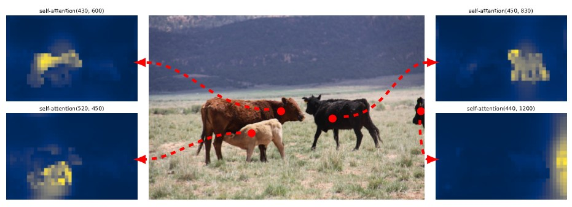
図3：一組の参照点に対するエンコーダの自己注意。エンコーダは個々のインスタンスを分離できている。予測は、検証セットの画像に対してベースラインの DETR モデルで行った。
図中ラベル：self-attention(430, 600)＝自己注意（参照点の座標 (430, 600)）。他の 3 枚も同様に、括弧内は参照点の座標を表す。
FFN の重要性。Transformer 内部の FFN は \(1 \times 1\) 畳み込み層とみなすことができ、エンコーダを注意機構で拡張された畳み込みネットワーク［3］に類似したものにしている。我々はこれを完全に取り除き、Transformer 層に注意機構だけを残すことを試みる。ネットワークのパラメータ数を 41.3M から 28.7M に減らし、Transformer には 10.8M のみを残すと、性能は 2.3 AP 低下する。したがって、FFN は良好な結果を達成するために重要であると結論づける。
位置エンコーディングの重要性。我々のモデルには 2 種類の位置エンコーディングがある。空間的な位置エンコーディングと、出力の位置エンコーディング（物体クエリ）である。固定のエンコーディングと学習されたエンコーディングのさまざまな組み合わせで実験し、結果を表3に示す。出力の位置エンコーディングは必須であり取り除くことはできないため、それをデコーダの入力で一度だけ渡すか、デコーダのすべての注意層でクエリに加算するかのいずれかで実験する。最初の実験では、空間的な位置エンコーディングを完全に取り除き、出力の位置エンコーディングを入力で渡す。興味深いことに、モデルはそれでも 32 AP 以上を達成し、ベースラインに対して 7.8 AP の低下にとどまる。次に、元の Transformer［47］と同様に、固定の正弦波の空間位置エンコーディングと出力エンコーディングを入力で一度だけ渡すと、位置エンコーディングを注意機構に直接渡す場合と比べて 1.4 AP 低下することがわかる。学習された空間エンコーディングを注意機構に渡した場合も同様の結果となる。驚くべきことに、エンコーダで空間エンコーディングを一切渡さなくても、AP の低下はわずか 1.3 AP にとどまる。エンコーディングを注意機構に渡す場合、それらはすべての層で共有され、出力エンコーディング（物体クエリ）は常に学習される。
これらのアブレーションから、Transformer の構成要素、すなわちエンコーダにおける大域的な自己注意、FFN、複数のデコーダ層、位置エンコーディングは、いずれも最終的な物体検出性能に大きく寄与していると結論づける。
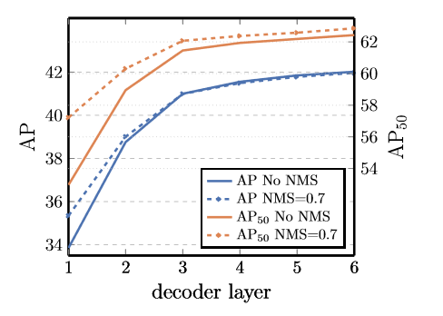
図4：各デコーダ層の後の AP と AP50 の性能。長いスケジュールで学習した単一のベースラインモデルを評価している。DETR は設計上 NMS を必要とせず、この図によってそれが検証される。NMS は最終層では TP（真陽性）の予測を除去して AP を低下させるが、最初のデコーダ層では、最初の層には（予測間の）やり取りがないため二重の予測を除去して AP を向上させ、AP50 もわずかに改善する。
図中ラベル：decoder layer＝デコーダ層、AP No NMS＝AP（NMS なし）、AP NMS=0.7＝AP（NMS 閾値 0.7）、AP50 No NMS＝AP50（NMS なし）、AP50 NMS=0.7＝AP50（NMS 閾値 0.7）
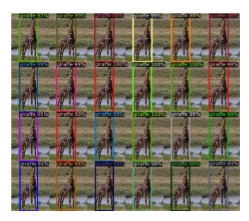
図5：希少クラスに対する分布外汎化。学習セットには 13 頭を超えるキリンが写った画像は 1 枚もないにもかかわらず、DETR は同じクラスの 24 個以上のインスタンスへの汎化に何の問題もない。
図中ラベル：giraffe＝キリン（後ろの数値は確信度）
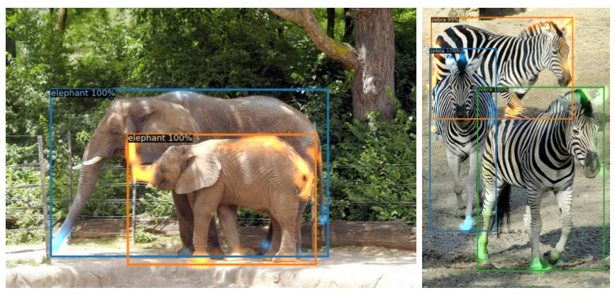
図6：予測された各物体に対するデコーダの注意の可視化（画像は COCO val セットから）。予測は DETR-DC5 モデルで行った。注意スコアは物体ごとに異なる色で表している。デコーダは通常、脚や頭のような物体の端部に注意を向ける。カラーでの閲覧を推奨する。
図中ラベル：elephant＝ゾウ、zebra＝シマウマ（後ろの数値は確信度）
| spatial pos. enc.（空間位置エンコーディング） | output pos. enc.（出力位置エンコーディング） | AP | Δ | AP50 | Δ | |
|---|---|---|---|---|---|---|
| encoder（エンコーダ） | decoder（デコーダ） | decoder（デコーダ） | ||||
| none | none | learned at input | 32.8 | -7.8 | 55.2 | -6.5 |
| sine at input | sine at input | learned at input | 39.2 | -1.4 | 60.0 | -1.6 |
| learned at attn. | learned at attn. | learned at attn. | 39.6 | -1.0 | 60.7 | -0.9 |
| none | sine at attn. | learned at attn. | 39.3 | -1.3 | 60.3 | -1.4 |
| sine at attn. | sine at attn. | learned at attn. | 40.6 | - | 61.6 | - |
表3：異なる位置エンコーディングに対する結果を、ベースライン（最終行）と比較したもの。ベースラインは、エンコーダとデコーダの両方のすべての注意層で固定の正弦波位置エンコーディングを渡す。学習された埋め込みはすべての層で共有される。空間位置エンコーディングを用いないと AP が大きく低下する。興味深いことに、それらをデコーダでのみ渡す場合の AP の低下はわずかである。これらのモデルはすべて、学習された出力位置エンコーディングを用いる。
表中の語：none＝なし、sine at input＝正弦波を入力で付与、sine at attn.＝正弦波を各注意層で付与、learned at input＝学習済みを入力で付与、learned at attn.＝学習済みを各注意層で付与
| class | ℓ1 | GIoU | AP | Δ | AP50 | Δ | APS | APM | APL |
|---|---|---|---|---|---|---|---|---|---|
| ✓ | ✓ | 35.8 | -4.8 | 57.3 | -4.4 | 13.7 | 39.8 | 57.9 | |
| ✓ | ✓ | 39.9 | -0.7 | 61.6 | 0 | 19.9 | 43.2 | 57.9 | |
| ✓ | ✓ | ✓ | 40.6 | - | 61.6 | - | 19.9 | 44.3 | 60.2 |
表4：損失の構成要素が AP に与える影響。\(\ell_1\) 損失と GIoU 損失をそれぞれ無効にした 2 つのモデルを学習し、\(\ell_1\) 単独では結果が悪いが、GIoU と組み合わせると APM と APL が向上することを観察した。我々のベースライン（最終行）は両方の損失を組み合わせている。
表中の語：class＝クラス分類損失
損失のアブレーション。マッチングコストと損失の各構成要素の重要性を評価するため、それらをオン・オフしたいくつかのモデルを学習する。損失には 3 つの構成要素がある。クラス分類損失、\(\ell_1\) バウンディングボックス距離損失、GIoU［38］損失である。クラス分類損失は学習に不可欠であり無効にできないため、バウンディングボックス距離損失なしのモデルと GIoU 損失なしのモデルを学習し、3 つの損失すべてで学習したベースラインと比較する。結果を表4に示す。GIoU 損失は単独でモデル性能の大部分を担っており、損失を組み合わせたベースラインに対して 0.7 AP しか低下しない。GIoU なしで \(\ell_1\) を用いると結果は悪い。我々は異なる損失の単純なアブレーション（毎回同じ重み付けを使用）のみを調べたが、それらを組み合わせる他の方法では異なる結果が得られる可能性がある。
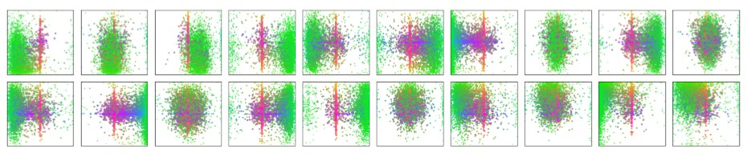
図7：DETR デコーダにおける全 \(N = 100\) 個の予測スロットのうち 20 個について、COCO 2017 val セットの全画像に対するすべてのボックス予測を可視化したもの。各ボックス予測は、各画像のサイズで正規化した 1×1 の正方形内に、その中心座標を持つ点として表されている。点は色分けされており、緑は小さなボックス、赤は大きな横長のボックス、青は大きな縦長のボックスに対応する。各スロットは、いくつかの動作モードによって特定の領域とボックスサイズに特化するよう学習することが観察される。ほぼすべてのスロットが、COCO データセットで一般的な画像全体にわたる大きなボックスを予測するモードを持つことに注意されたい。
4.3 分析
デコーダ出力スロットの分析。図7では、COCO 2017 val セットのすべての画像について、異なるスロットが予測したボックスを可視化している。DETR はクエリスロットごとに異なる特化を学習する。各スロットは、異なる領域とボックスサイズに焦点を当てた複数の動作モードを持つことが観察される。特に、すべてのスロットが画像全体にわたるボックスを予測するモードを持っている（プロットの中央に縦に並んだ赤い点として見える）。これは COCO における物体の分布に関係していると我々は推測する。
未知のインスタンス数への汎化。COCO のいくつかのクラスでは、同じ画像に同じクラスのインスタンスが多数含まれる例が十分に存在しない。例えば、学習セットには 13 頭を超えるキリンが写った画像はない。DETR の汎化能力を検証するため、合成画像3を作成する（図5参照）。我々のモデルは、明らかに分布外であるこの画像上の 24 頭のキリンをすべて見つけることができる。この実験により、各物体クエリに強いクラス特化が存在しないことが確認される。
脚注3：元画像のクレジット：https://www.piqsels.com/en/public-domain-photo-jzlwu
4.4 パノプティックセグメンテーションのための DETR
パノプティックセグメンテーション［19］は、近年コンピュータビジョンのコミュニティから大きな注目を集めている。Faster R-CNN［37］を Mask R-CNN［14］に拡張したのと同様に、DETR もデコーダ出力の上にマスクヘッドを追加することで自然に拡張できる。本節では、そのようなヘッドを用いて、stuff クラスと thing クラスを統一的に扱うことでパノプティックセグメンテーション［19］を生成できることを示す。実験は、80 の things カテゴリに加えて 53 の stuff カテゴリを持つ COCO データセットのパノプティックアノテーションで行う。
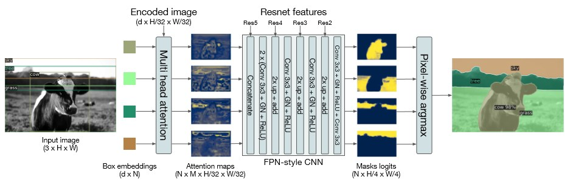
図8：パノプティックヘッドの説明図。検出された各物体について二値マスクが並列に生成され、その後、ピクセルごとの argmax を用いてマスクが統合される。
図中ラベル：Input image (3 x H x W)＝入力画像（3 × H × W）、Box embeddings (d x N)＝ボックス埋め込み（d × N）、Encoded image (d x H/32 x W/32)＝エンコードされた画像（d × H/32 × W/32）、Multi head attention＝マルチヘッド注意、Attention maps (N x M x H/32 x W/32)＝注意マップ（N × M × H/32 × W/32）、Resnet features＝ResNet 特徴（Res5, Res4, Res3, Res2）、Concatenate＝連結、2 x (Conv 3x3 + GN + ReLU)＝2 ×（3x3 畳み込み + GN + ReLU）、2x up + add＝2 倍アップサンプリング + 加算、Conv 3x3 + GN + ReLU + Conv 3x3＝3x3 畳み込み + GN + ReLU + 3x3 畳み込み、FPN-style CNN＝FPN 型 CNN、Masks logits (N x H/4 x W/4)＝マスクのロジット（N × H/4 × W/4）、Pixel-wise argmax＝ピクセルごとの argmax、sky＝空、tree＝木、grass＝草、cow＝ウシ
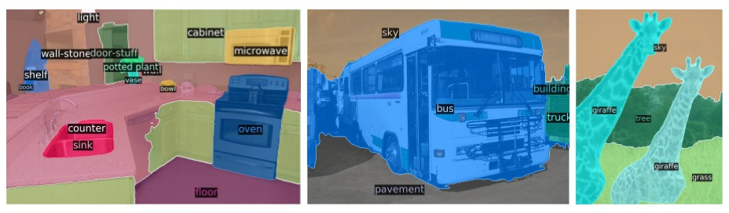
図9：DETR-R101 によって生成されたパノプティックセグメンテーションの定性的な結果。DETR は things と stuff に対して、統一的な方法で整合したマスク予測を生成する。
図中ラベル：light＝照明、cabinet＝キャビネット、wall-stone＝石壁、door-stuff＝ドア、potted plant＝鉢植え、microwave＝電子レンジ、shelf＝棚、book＝本、vase＝花瓶、bowl＝ボウル、counter＝カウンター、sink＝シンク、oven＝オーブン、floor＝床、sky＝空、bus＝バス、building＝建物、truck＝トラック、pavement＝舗道、giraffe＝キリン、tree＝木、grass＝草
我々は、同じレシピを用いて、COCO 上で stuff クラスと things クラスの両方の周囲のボックスを予測するように DETR を学習する。ハンガリアンマッチングはボックス間の距離を用いて計算されるため、学習を可能にするにはボックスの予測が必要である。また、予測された各ボックスについて二値マスクを予測するマスクヘッドを追加する（図8参照）。マスクヘッドは各物体について Transformer デコーダの出力を入力として受け取り、エンコーダの出力に対するこの埋め込みのマルチヘッド（\(M\) ヘッド）注意スコアを計算し、物体ごとに低解像度の \(M\) 枚の注意ヒートマップを生成する。最終的な予測を行い解像度を高めるために、FPN に似たアーキテクチャを用いる。このアーキテクチャの詳細は補足資料で説明する。マスクの最終的な解像度はストライド 4 であり、各マスクは DICE/F-1 損失［28］と Focal 損失［23］を用いて独立に教師付けされる。
マスクヘッドは、同時に学習することも、2 段階の手順で学習することもできる。後者では、まずボックスのみについて DETR を学習し、その後すべての重みを凍結してマスクヘッドのみを 25 エポック学習する。実験的には、これら 2 つのアプローチは同様の結果をもたらすが、総実時間の学習時間が短くなるため、後者の方法を用いた結果を報告する。
| モデル | バックボーン | PQ | SQ | RQ | PQth | SQth | RQth | PQst | SQst | RQst | AP |
|---|---|---|---|---|---|---|---|---|---|---|---|
| PanopticFPN++ | R50 | 42.4 | 79.3 | 51.6 | 49.2 | 82.4 | 58.8 | 32.3 | 74.8 | 40.6 | 37.7 |
| UPSnet | R50 | 42.5 | 78.0 | 52.5 | 48.6 | 79.4 | 59.6 | 33.4 | 75.9 | 41.7 | 34.3 |
| UPSnet-M | R50 | 43.0 | 79.1 | 52.8 | 48.9 | 79.7 | 59.7 | 34.1 | 78.2 | 42.3 | 34.3 |
| PanopticFPN++ | R101 | 44.1 | 79.5 | 53.3 | 51.0 | 83.2 | 60.6 | 33.6 | 74.0 | 42.1 | 39.7 |
| DETR | R50 | 43.4 | 79.3 | 53.8 | 48.2 | 79.8 | 59.5 | 36.3 | 78.5 | 45.3 | 31.1 |
| DETR-DC5 | R50 | 44.6 | 79.8 | 55.0 | 49.4 | 80.5 | 60.6 | 37.3 | 78.7 | 46.5 | 31.9 |
| DETR-R101 | R101 | 45.1 | 79.9 | 55.5 | 50.5 | 80.9 | 61.7 | 37.0 | 78.5 | 46.0 | 33.0 |
表5：COCO val データセットにおける最先端手法 UPSNet［51］および Panoptic FPN［18］との比較。公平な比較のため、PanopticFPN を DETR と同じデータ拡張を用いて 18x スケジュールで再学習した。UPSNet は 1x スケジュールを用いており、UPSNet-M はマルチスケールのテスト時拡張を用いたバージョンである。
最終的なパノプティックセグメンテーションを予測するには、各ピクセルにおいてマスクスコアの argmax をとり、得られたマスクに対応するカテゴリを割り当てるだけである。この手続きにより最終的なマスクに重なりがないことが保証されるため、DETR は異なるマスクを整合させるためによく用いられるヒューリスティック［19］を必要としない。
学習の詳細。DETR、DETR-DC5、DETR-R101 モデルを、バウンディングボックス検出のレシピに従って、COCO データセットの stuff クラスと things クラスの周囲のボックスを予測するように学習する。新しいマスクヘッドは 25 エポック学習する（詳細は補足資料を参照）。推論時には、まず確信度が 85% 未満の検出を除外し、次にピクセルごとの argmax を計算して各ピクセルがどのマスクに属するかを決定する。その後、同じ stuff カテゴリの異なるマスク予測を 1 つにまとめ、空のもの（4 ピクセル未満）を除外する。
主な結果。定性的な結果を図9に示す。表5では、我々の統一的なパノプティックセグメンテーションのアプローチを、things と stuff を別々に扱ういくつかの確立された手法と比較する。パノプティック品質（PQ）と、その things（PQth）および stuff（PQst）への内訳を報告する。また、パノプティックの後処理を行う前（我々の場合はピクセルごとの argmax をとる前）のマスク AP（things クラスについて計算）も報告する。DETR が COCO-val 2017 における既発表の結果を上回り、さらに我々の強力な PanopticFPN ベースライン（公平な比較のため DETR と同じデータ拡張で学習）をも上回ることを示す。結果の内訳から、DETR は特に stuff クラスで優位であることがわかり、エンコーダの注意によって可能になる大域的な推論がこの結果の鍵となる要素であると我々は推測する。things クラスについては、マスク AP の計算においてベースラインと比べて最大 8 mAP という大きな差があるにもかかわらず、DETR は競争力のある PQth を得ている。また、COCO データセットのテストセットでも本手法を評価し、46 PQ を得た。我々のアプローチが、今後の研究においてパノプティックセグメンテーションのための完全に統一されたモデルの探求を促すことを期待する。
5 結論
我々は DETR を提示した。これは、Transformer と、直接的な集合予測のための二部マッチング損失に基づく、物体検出システムの新しい設計である。このアプローチは、難度の高い COCO データセットにおいて、最適化された Faster R-CNN ベースラインと同等の結果を達成する。DETR は実装が容易であり、パノプティックセグメンテーションへ容易に拡張できる柔軟なアーキテクチャを持ち、そこでも競争力のある結果を示す。さらに、おそらく自己注意によって行われる大域的な情報処理のおかげで、大きな物体に対して Faster R-CNN よりも著しく優れた性能を達成する。
この検出器の新しい設計には、特に学習、最適化、小さな物体に対する性能に関して、新たな課題も伴う。現在の検出器も同様の問題に対処するために数年にわたる改良を必要とした。我々は、今後の研究によって DETR についてもこれらの課題がうまく解決されることを期待している。
6 謝辞
Sainbayar Sukhbaatar、Piotr Bojanowski、Natalia Neverova、David Lopez-Paz、Guillaume Lample、Danielle Rothermel、Kaiming He、Ross Girshick、Xinlei Chen、そして Facebook AI Research Paris チームの皆に、議論と助言をいただいたことに感謝する。それらなしには本研究は実現できなかった。
参考文献
参考文献は原文のまま掲載した。
- Al-Rfou, R., Choe, D., Constant, N., Guo, M., Jones, L.: Character-level language modeling with deeper self-attention. In: AAAI Conference on Artificial Intelligence (2019)
- Bahdanau, D., Cho, K., Bengio, Y.: Neural machine translation by jointly learning to align and translate. In: ICLR (2015)
- Bello, I., Zoph, B., Vaswani, A., Shlens, J., Le, Q.V.: Attention augmented convolutional networks. In: ICCV (2019)
- Bodla, N., Singh, B., Chellappa, R., Davis, L.S.: Soft-NMS improving object detection with one line of code. In: ICCV (2017)
- Cai, Z., Vasconcelos, N.: Cascade R-CNN: High quality object detection and instance segmentation. PAMI (2019)
- Chan, W., Saharia, C., Hinton, G., Norouzi, M., Jaitly, N.: Imputer: Sequence modelling via imputation and dynamic programming. arXiv:2002.08926 (2020)
- Cordonnier, J.B., Loukas, A., Jaggi, M.: On the relationship between self-attention and convolutional layers. In: ICLR (2020)
- Devlin, J., Chang, M.W., Lee, K., Toutanova, K.: BERT: Pre-training of deep bidirectional transformers for language understanding. In: NAACL-HLT (2019)
- Erhan, D., Szegedy, C., Toshev, A., Anguelov, D.: Scalable object detection using deep neural networks. In: CVPR (2014)
- Ghazvininejad, M., Levy, O., Liu, Y., Zettlemoyer, L.: Mask-predict: Parallel decoding of conditional masked language models. arXiv:1904.09324 (2019)
- Glorot, X., Bengio, Y.: Understanding the difficulty of training deep feedforward neural networks. In: AISTATS (2010)
- Gu, J., Bradbury, J., Xiong, C., Li, V.O., Socher, R.: Non-autoregressive neural machine translation. In: ICLR (2018)
- He, K., Girshick, R., Dollár, P.: Rethinking imagenet pre-training. In: ICCV (2019)
- He, K., Gkioxari, G., Dollár, P., Girshick, R.B.: Mask R-CNN. In: ICCV (2017)
- He, K., Zhang, X., Ren, S., Sun, J.: Deep residual learning for image recognition. In: CVPR (2016)
- Hosang, J.H., Benenson, R., Schiele, B.: Learning non-maximum suppression. In: CVPR (2017)
- Hu, H., Gu, J., Zhang, Z., Dai, J., Wei, Y.: Relation networks for object detection. In: CVPR (2018)
- Kirillov, A., Girshick, R., He, K., Dollár, P.: Panoptic feature pyramid networks. In: CVPR (2019)
- Kirillov, A., He, K., Girshick, R., Rother, C., Dollar, P.: Panoptic segmentation. In: CVPR (2019)
- Kuhn, H.W.: The hungarian method for the assignment problem (1955)
- Li, Y., Qi, H., Dai, J., Ji, X., Wei, Y.: Fully convolutional instance-aware semantic segmentation. In: CVPR (2017)
- Lin, T.Y., Dollár, P., Girshick, R., He, K., Hariharan, B., Belongie, S.: Feature pyramid networks for object detection. In: CVPR (2017)
- Lin, T.Y., Goyal, P., Girshick, R.B., He, K., Dollár, P.: Focal loss for dense object detection. In: ICCV (2017)
- Lin, T.Y., Maire, M., Belongie, S., Hays, J., Perona, P., Ramanan, D., Dollár, P., Zitnick, C.L.: Microsoft COCO: Common objects in context. In: ECCV (2014)
- Liu, W., Anguelov, D., Erhan, D., Szegedy, C., Reed, S.E., Fu, C.Y., Berg, A.C.: Ssd: Single shot multibox detector. In: ECCV (2016)
- Loshchilov, I., Hutter, F.: Decoupled weight decay regularization. In: ICLR (2017)
- Lüscher, C., Beck, E., Irie, K., Kitza, M., Michel, W., Zeyer, A., Schlüter, R., Ney, H.: Rwth asr systems for librispeech: Hybrid vs attention - w/o data augmentation. arXiv:1905.03072 (2019)
- Milletari, F., Navab, N., Ahmadi, S.A.: V-net: Fully convolutional neural networks for volumetric medical image segmentation. In: 3DV (2016)
- Oord, A.v.d., Li, Y., Babuschkin, I., Simonyan, K., Vinyals, O., Kavukcuoglu, K., Driessche, G.v.d., Lockhart, E., Cobo, L.C., Stimberg, F., et al.: Parallel wavenet: Fast high-fidelity speech synthesis. arXiv:1711.10433 (2017)
- Park, E., Berg, A.C.: Learning to decompose for object detection and instance segmentation. arXiv:1511.06449 (2015)
- Parmar, N., Vaswani, A., Uszkoreit, J., Kaiser, L., Shazeer, N., Ku, A., Tran, D.: Image transformer. In: ICML (2018)
- Paszke, A., Gross, S., Massa, F., Lerer, A., Bradbury, J., Chanan, G., Killeen, T., Lin, Z., Gimelshein, N., Antiga, L., Desmaison, A., Kopf, A., Yang, E., DeVito, Z., Raison, M., Tejani, A., Chilamkurthy, S., Steiner, B., Fang, L., Bai, J., Chintala, S.: Pytorch: An imperative style, high-performance deep learning library. In: NeurIPS (2019)
- Pineda, L., Salvador, A., Drozdzal, M., Romero, A.: Elucidating image-to-set prediction: An analysis of models, losses and datasets. arXiv:1904.05709 (2019)
- Radford, A., Wu, J., Child, R., Luan, D., Amodei, D., Sutskever, I.: Language models are unsupervised multitask learners (2019)
- Redmon, J., Divvala, S., Girshick, R., Farhadi, A.: You only look once: Unified, real-time object detection. In: CVPR (2016)
- Ren, M., Zemel, R.S.: End-to-end instance segmentation with recurrent attention. In: CVPR (2017)
- Ren, S., He, K., Girshick, R.B., Sun, J.: Faster R-CNN: Towards real-time object detection with region proposal networks. PAMI (2015)
- Rezatofighi, H., Tsoi, N., Gwak, J., Sadeghian, A., Reid, I., Savarese, S.: Generalized intersection over union. In: CVPR (2019)
- Rezatofighi, S.H., Kaskman, R., Motlagh, F.T., Shi, Q., Cremers, D., Leal-Taixé, L., Reid, I.: Deep perm-set net: Learn to predict sets with unknown permutation and cardinality using deep neural networks. arXiv:1805.00613 (2018)
- Rezatofighi, S.H., Milan, A., Abbasnejad, E., Dick, A., Reid, I., Kaskman, R., Cremers, D., Leal-Taix, l.: Deepsetnet: Predicting sets with deep neural networks. In: ICCV (2017)
- Romera-Paredes, B., Torr, P.H.S.: Recurrent instance segmentation. In: ECCV (2015)
- Salvador, A., Bellver, M., Baradad, M., Marqués, F., Torres, J., Giró, X.: Recurrent neural networks for semantic instance segmentation. arXiv:1712.00617 (2017)
- Stewart, R.J., Andriluka, M., Ng, A.Y.: End-to-end people detection in crowded scenes. In: CVPR (2015)
- Sutskever, I., Vinyals, O., Le, Q.V.: Sequence to sequence learning with neural networks. In: NeurIPS (2014)
- Synnaeve, G., Xu, Q., Kahn, J., Grave, E., Likhomanenko, T., Pratap, V., Sriram, A., Liptchinsky, V., Collobert, R.: End-to-end ASR: from supervised to semi-supervised learning with modern architectures. arXiv:1911.08460 (2019)
- Tian, Z., Shen, C., Chen, H., He, T.: FCOS: Fully convolutional one-stage object detection. In: ICCV (2019)
- Vaswani, A., Shazeer, N., Parmar, N., Uszkoreit, J., Jones, L., Gomez, A.N., Kaiser, L., Polosukhin, I.: Attention is all you need. In: NeurIPS (2017)
- Vinyals, O., Bengio, S., Kudlur, M.: Order matters: Sequence to sequence for sets. In: ICLR (2016)
- Wang, X., Girshick, R.B., Gupta, A., He, K.: Non-local neural networks. In: CVPR (2018)
- Wu, Y., Kirillov, A., Massa, F., Lo, W.Y., Girshick, R.: Detectron2. https://github.com/facebookresearch/detectron2 (2019)
- Xiong, Y., Liao, R., Zhao, H., Hu, R., Bai, M., Yumer, E., Urtasun, R.: Upsnet: A unified panoptic segmentation network. In: CVPR (2019)
- Zhang, S., Chi, C., Yao, Y., Lei, Z., Li, S.Z.: Bridging the gap between anchor-based and anchor-free detection via adaptive training sample selection. arXiv:1912.02424 (2019)
- Zhou, X., Wang, D., Krähenbühl, P.: Objects as points. arXiv:1904.07850 (2019)
A 付録
A.1 準備：マルチヘッド注意層
我々のモデルは Transformer アーキテクチャに基づいているため、網羅性のために、ここで我々が用いる注意機構の一般形を確認しておく。注意機構は［47］に従うが、位置エンコーディングの詳細（式8参照）のみは［7］に従う。
マルチヘッド 次元 \(d\) の \(M\) 個のヘッドを持つマルチヘッド注意の一般形は、次のシグネチャを持つ関数である（\(d' = \frac{d}{M}\) とし、行列・テンソルのサイズを下括弧に示す）。
\[ \text{mh-attn} : \underbrace{X_{\text{q}}}_{d \times N_{\text{q}}}, \underbrace{X_{\text{kv}}}_{d \times N_{\text{kv}}}, \underbrace{T}_{M \times 3 \times d' \times d}, \underbrace{L}_{d \times d} \mapsto \underbrace{\tilde{X}_{\text{q}}}_{d \times N_{\text{q}}} \tag{3} \]
ここで \(X_{\text{q}}\) は長さ \(N_{\text{q}}\) のクエリ系列、\(X_{\text{kv}}\) は長さ \(N_{\text{kv}}\) のキー・バリュー系列（説明を簡単にするため同じチャネル数 \(d\) を持つとする）、\(T\) はいわゆるクエリ、キー、バリューの埋め込みを計算するための重みテンソル、\(L\) は射影行列である。出力はクエリ系列と同じサイズである。詳細を述べる前に用語を定めておくと、マルチヘッド自己注意（mh-s-attn）は \(X_{\text{q}} = X_{\text{kv}}\) の特殊な場合である。すなわち、
\[ \text{mh-s-attn}(X, T, L) = \text{mh-attn}(X, X, T, L)\,. \tag{4} \]
マルチヘッド注意は、\(M\) 個の単一注意ヘッドを単に連結し、その後 \(L\) で射影したものである。一般的な慣行［47］では、残差接続、ドロップアウト、層正規化を用いる。言い換えれば、\(\tilde{X}_{\text{q}} = \text{mh-attn}(X_{\text{q}}, X_{\text{kv}}, T, L)\) とし、注意ヘッドの連結を \(\bar{\bar{X}}^{(q)}\) と表すと、次が成り立つ。（訳注：本文では連結を \(\bar{\bar{X}}^{(q)}\) と表記しているが、式(5)(6)では同じものが \(X'_{\text{q}}\) と書かれている。）
\[ X'_{\text{q}} = [\text{attn}(X_{\text{q}}, X_{\text{kv}}, T_1); \ldots; \text{attn}(X_{\text{q}}, X_{\text{kv}}, T_M)] \tag{5} \]
\[ \tilde{X}_{\text{q}} = \text{layernorm}\big(X_{\text{q}} + \text{dropout}(L X'_{\text{q}})\big)\,, \tag{6} \]
ここで [;] はチャネル軸方向の連結を表す。
単一ヘッド 重みテンソル \(T' \in \mathbb{R}^{3 \times d' \times d}\) を持つ注意ヘッドを \(\text{attn}(X_{\text{q}}, X_{\text{kv}}, T')\) と表す。これは追加の位置エンコーディング \(P_{\text{q}} \in \mathbb{R}^{d \times N_{\text{q}}}\) および \(P_{\text{kv}} \in \mathbb{R}^{d \times N_{\text{kv}}}\) に依存する。まず、クエリとキーの位置エンコーディングを加えた後に、いわゆるクエリ、キー、バリューの埋め込みを計算する［7］。
\[ [Q; K; V] = [T'_1(X_{\text{q}} + P_{\text{q}}); T'_2(X_{\text{kv}} + P_{\text{kv}}); T'_3 X_{\text{kv}}] \tag{7} \]
ここで \(T'\) は \(T'_1, T'_2, T'_3\) の連結である。次に、クエリとキーの内積のソフトマックスに基づいて注意の重み \(\alpha\) が計算され、クエリ系列の各要素がキー・バリュー系列のすべての要素に注意を向ける（\(i\) はクエリのインデックス、\(j\) はキー・バリューのインデックス）。
\[ \alpha_{i,j} = \frac{e^{\frac{1}{\sqrt{d'}} Q_i^T K_j}}{Z_i} \quad \text{where } Z_i = \sum_{j=1}^{N_{\text{kv}}} e^{\frac{1}{\sqrt{d'}} Q_i^T K_j}\,. \tag{8} \]
我々の場合、位置エンコーディングは学習されたものでも固定のものでもよいが、与えられたクエリ／キー・バリュー系列に対してすべての注意層で共有されるため、注意のパラメータとしては明示的に書かない。その正確な値については、エンコーダとデコーダを説明する際にさらに詳しく述べる。最終的な出力は、注意の重みで重み付けされたバリューの集約である。\(i\) 番目の行は \(\text{attn}_i(X_{\text{q}}, X_{\text{kv}}, T') = \sum_{j=1}^{N_{\text{kv}}} \alpha_{i,j} V_j\) で与えられる。
フィードフォワードネットワーク（FFN）層 元の Transformer は、マルチヘッド注意といわゆる FFN 層［47］を交互に配置する。FFN 層は実質的に多層の 1x1 畳み込みであり、我々の場合は \(Md\) 個の入力チャネルと出力チャネルを持つ。我々が考える FFN は、ReLU 活性化を持つ 2 層の 1x1 畳み込みで構成される。式6と同様に、2 つの層の後には残差接続／ドロップアウト／層正規化もある。
A.2 損失
完全を期すため、我々のアプローチで用いる損失を詳しく示す。すべての損失はバッチ内の物体数で正規化される。分散学習では特別な注意が必要である。各 GPU はサブバッチを受け取るため、一般にサブバッチは GPU 間で均衡していないことから、ローカルなバッチ内の物体数で正規化するだけでは不十分である。代わりに、すべてのサブバッチにおける物体の総数で正規化することが重要である。
ボックス損失 ［41,36］と同様に、我々は損失において Intersection over Union のソフト版を、\(\hat{b}\) に対する \(\ell_1\) 損失とともに用いる。
\[ \mathcal{L}_{\text{box}}(b_{\sigma(i)}, \hat{b}_i) = \lambda_{\text{iou}} \mathcal{L}_{\text{iou}}(b_{\sigma(i)}, \hat{b}_i) + \lambda_{\text{L1}} ||b_{\sigma(i)} - \hat{b}_i||_1\,, \tag{9} \]
ここで \(\lambda_{\text{iou}}, \lambda_{\text{L1}} \in \mathbb{R}\) はハイパーパラメータであり、\(\mathcal{L}_{\text{iou}}(\cdot)\) は一般化 IoU［38］である。
\[ \mathcal{L}_{\text{iou}}(b_{\sigma(i)}, \hat{b}_i) = 1 - \left( \frac{|b_{\sigma(i)} \cap \hat{b}_i|}{|b_{\sigma(i)} \cup \hat{b}_i|} - \frac{|B(b_{\sigma(i)}, \hat{b}_i) \setminus b_{\sigma(i)} \cup \hat{b}_i|}{|B(b_{\sigma(i)}, \hat{b}_i)|} \right). \tag{10} \]
|.| は「面積」を意味し、ボックス座標の和集合と共通部分は、ボックスそのものの略記として用いている。和集合や共通部分の面積は \(b_{\sigma(i)}\) と \(\hat{b}_i\) の線形関数の min / max によって計算されるため、損失は確率的勾配に対して十分に良い性質を持つ。\(B(b_{\sigma(i)}, \hat{b}_i)\) は \(b_{\sigma(i)}, \hat{b}_i\) を含む最大のボックスを意味する（\(B\) を含む面積も、ボックス座標の線形関数の min / max に基づいて計算される）。（訳注：GIoU の定義上、\(B\) は両ボックスを含む「最小の」ボックスであり、原文の largest は smallest の誤りと考えられる。）
DICE/F-1 損失［28］ DICE 係数は Intersection over Union と密接に関連している。モデルによる生のマスクのロジット予測を \(\hat{m}\)、二値の目標マスクを \(m\) と表すと、損失は次のように定義される。
\[ \mathcal{L}_{\text{DICE}}(m, \hat{m}) = 1 - \frac{2 m \sigma(\hat{m}) + 1}{\sigma(\hat{m}) + m + 1} \tag{11} \]
ここで \(\sigma\) はシグモイド関数である。この損失は物体数で正規化される。
A.3 詳細なアーキテクチャ
すべての注意層で位置エンコーディングを渡す、DETR で用いる Transformer の詳細な説明を図10に示す。CNN バックボーンからの画像特徴は、マルチヘッド自己注意層ごとにクエリとキーに加算される空間位置エンコーディングとともに、Transformer エンコーダに通される。次にデコーダは、クエリ（初期値はゼロ）、出力位置エンコーディング（物体クエリ）、およびエンコーダのメモリを受け取り、複数のマルチヘッド自己注意とデコーダ・エンコーダ注意を通じて、予測されたクラスラベルとバウンディングボックスの最終的な集合を生成する。最初のデコーダ層における最初の自己注意層は省略できる。
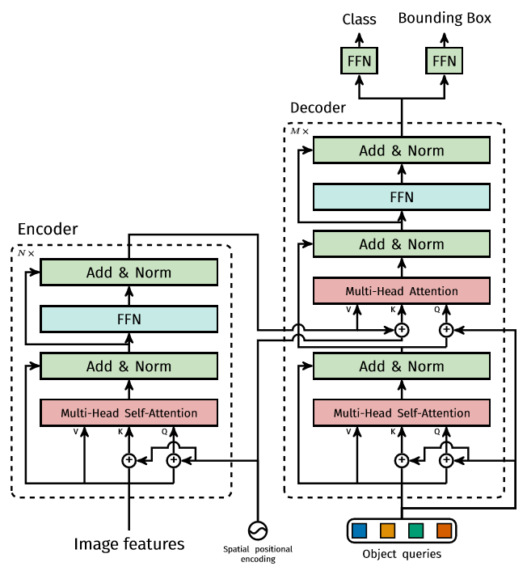
図10：DETR の Transformer のアーキテクチャ。詳細は A.3 節を参照されたい。
図中ラベル：Encoder＝エンコーダ、Decoder＝デコーダ、Image features＝画像特徴、Spatial positional encoding＝空間位置エンコーディング、Object queries＝物体クエリ、Multi-Head Self-Attention＝マルチヘッド自己注意、Multi-Head Attention＝マルチヘッド注意、Add & Norm＝加算と正規化、Class＝クラス、Bounding Box＝バウンディングボックス、N×／M×＝N 回／M 回の繰り返し、V／K／Q＝バリュー／キー／クエリ
計算量 エンコーダの各自己注意の計算量は \(\mathcal{O}(d^2 HW + d(HW)^2)\) である。\(\mathcal{O}(d'd)\) は単一のクエリ／キー／バリュー埋め込みを計算するコスト（かつ \(Md' = d\)）であり、\(\mathcal{O}(d'(HW)^2)\) は 1 つのヘッドについて注意の重みを計算するコストである。その他の計算は無視できる。デコーダでは、各自己注意は \(\mathcal{O}(d^2 N + dN^2)\)、エンコーダとデコーダ間のクロス注意は \(\mathcal{O}(d^2(N + HW) + dNHW)\) であり、実際には \(N \ll HW\) であるため、エンコーダよりはるかに低い。
FLOPS の計算 Faster R-CNN の FLOPS は画像中の提案領域の数に依存するため、COCO 2017 検証セットの最初の 100 枚の画像に対する FLOPS の平均値を報告する。FLOPS は Detectron2［50］のツール flop_count_operators を用いて計算する。Detectron2 のモデルには変更なしで用い、DETR モデルについてはバッチ行列積（bmm）を考慮するよう拡張する。
A.4 学習のハイパーパラメータ
DETR は、改良された重み減衰の扱いを持つ AdamW［26］を用いて学習し、重み減衰を \(10^{-4}\) に設定する。また、最大勾配ノルム 0.1 の勾配クリッピングも適用する。バックボーンと Transformer はわずかに異なる扱いをするため、以下で両者の詳細を述べる。
バックボーン ImageNet で事前学習したバックボーン ResNet-50 を Torchvision から取り込み、最後の分類層を除去する。物体検出で広く採用されている慣行に従い、バックボーンのバッチ正規化の重みと統計量は学習中は凍結する。バックボーンは学習率 \(10^{-5}\) でファインチューニングする。バックボーンの学習率をネットワークの他の部分よりおよそ 1 桁小さくすることが、特に最初の数エポックにおいて学習を安定させるために重要であることを観察している。
Transformer Transformer は学習率 \(10^{-4}\) で学習する。各マルチヘッド注意と FFN の後、層正規化の前に、0.1 の加算的ドロップアウトを適用する。重みは Xavier 初期化でランダムに初期化する。
損失 バウンディングボックス回帰には、\(\ell_1\) 損失と GIoU 損失の線形結合を、それぞれ重み \(\lambda_{\text{L1}} = 5\) と \(\lambda_{\text{iou}} = 2\) で用いる。すべてのモデルは \(N = 100\) 個のデコーダクエリスロットで学習した。
ベースライン 我々の強化版 Faster-RCNN+ ベースラインは、バウンディングボックス回帰に標準的な \(\ell_1\) 損失とともに GIoU［38］損失を用いる。損失の最適な重みを見つけるためにグリッドサーチを行い、最終的なモデルでは、ボックス回帰タスクと提案領域回帰タスクに対してそれぞれ重み 20 と 1 で GIoU 損失のみを用いる。ベースラインには DETR と同じデータ拡張を採用し、\(9\times\) スケジュール（約 109 エポック）で学習する。その他の設定はすべて、Detectron2 model zoo［50］の同じモデルと同一である。
空間位置エンコーディング エンコーダの活性化は、画像特徴の対応する空間位置に関連付けられている。我々のモデルでは、これらの空間位置を表すために固定の絶対エンコーディングを用いる。元の Transformer［47］のエンコーディングを 2 次元の場合に一般化したもの［31］を採用する。具体的には、各埋め込みの 2 つの空間座標それぞれについて、周波数の異なる \(\frac{d}{2}\) 個の正弦関数と余弦関数を独立に用いる。そしてそれらを連結して、最終的な \(d\) チャネルの位置エンコーディングを得る。
A.5 追加の結果
DETR-R101 モデルによるパノプティック予測の追加の定性的な結果を図11に示す。
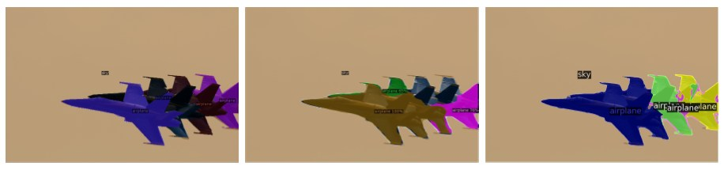
（a）物体が重なり合う失敗例。PanopticFPN は飛行機を 1 機完全に見逃し、DETR は 3 機を正確にセグメンテーションできていない。
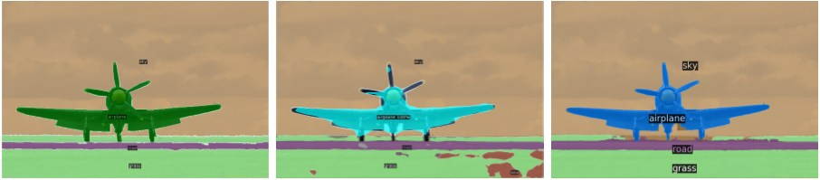
（b）Things のマスクはフル解像度で予測されるため、PanopticFPN よりも鮮明な境界が得られる。
図11：パノプティック予測の比較。左から順に、正解、ResNet 101 を用いた PanopticFPN、ResNet 101 を用いた DETR。
図中ラベル：sky＝空、airplane＝飛行機、road＝道路、grass＝草
インスタンス数の増加 設計上、DETR はクエリスロットの数、すなわち我々の実験では 100 個を超える物体を予測できない。本節では、この限界に近づいたときの DETR の挙動を分析する。あるクラスの典型的な正方形画像を選び、それを \(10 \times 10\) のグリッド上に繰り返し並べ、モデルが見逃したインスタンスの割合を計算する。インスタンスが 100 個未満の場合でモデルを試すため、いくつかのセルをランダムにマスクする。これにより、いくつのインスタンスが見えているかにかかわらず、物体の絶対的なサイズが同じになることが保証される。マスクのランダム性を考慮するため、異なるマスクで実験を 100 回繰り返す。結果を図12に示す。挙動はクラス間で類似しており、モデルは最大 50 個まで見えている場合にはすべてのインスタンスを検出するが、その後は飽和し始め、ますます多くのインスタンスを見逃すようになる。特筆すべきことに、画像に 100 個すべてのインスタンスが含まれる場合、モデルは平均 30 個しか検出せず、これは画像に 50 個のインスタンスしか含まれずそれらがすべて検出される場合よりも少ない。モデルのこの直感に反する挙動は、画像と検出が学習分布から大きく離れているためであると考えられる。
この試験は、単一クラスのインスタンスを多数含む例画像がごくわずかしかないため、設計上、分布外への汎化の試験であることに注意されたい。この実験から、2 種類のドメイン外汎化、すなわち画像そのものと、クラスあたりの物体数とを切り分けることは難しい。しかし、同じクラスの物体だけを多数含む COCO 画像はほとんど、あるいはまったく存在しないため、この種の実験は、クエリ物体がデータセットのラベルと位置の分布に過適合しているかどうかを理解するための我々の最善の取り組みである。全体として、実験は、モデルが 50 個の物体までほぼ完全な検出を行うことから、これらの分布に過適合していないことを示唆している。
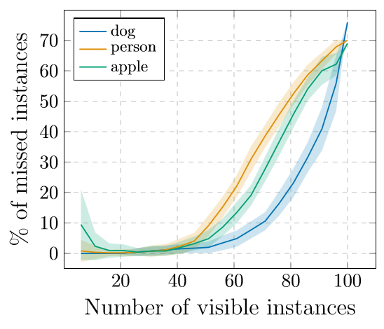
図12：画像中に存在するインスタンスの数に応じて、DETR が見逃したさまざまなクラスのインスタンス数を分析したもの。平均と標準偏差を報告している。インスタンスの数が 100 に近づくと、DETR は飽和し始め、ますます多くの物体を見逃すようになる。
図中ラベル：% of missed instances＝見逃したインスタンスの割合（%）、Number of visible instances＝見えているインスタンスの数、dog＝イヌ、person＝人、apple＝リンゴ
A.6 PyTorch 推論コード
このアプローチの単純さを示すため、PyTorch と Torchvision ライブラリを用いた推論コードをリスト1に掲載する。このコードは Python 3.6+、PyTorch 1.4、Torchvision 0.5 で動作する。バッチ処理には対応していないため、推論、または GPU あたり 1 枚の画像で DistributedDataParallel を用いる学習にのみ適していることに注意されたい。また、わかりやすさのため、このコードではエンコーダにおいて固定ではなく学習された位置エンコーディングを用いており、位置エンコーディングは各 Transformer 層ではなく入力にのみ加算されることにも注意されたい。これらの変更を行うには PyTorch の Transformer 実装を超える必要があり、可読性が損なわれる。実験を再現するための完全なコードは、会議の前に公開する予定である。
import torch
from torch import nn
from torchvision.models import resnet50
class DETR(nn.Module):
def __init__(self, num_classes, hidden_dim, nheads,
num_encoder_layers, num_decoder_layers):
super().__init__()
# ResNet-50 モデルからは畳み込み層のみを用いる
self.backbone = nn.Sequential(*list(resnet50(pretrained=True).children())[:-2])
self.conv = nn.Conv2d(2048, hidden_dim, 1)
self.transformer = nn.Transformer(hidden_dim, nheads,
num_encoder_layers, num_decoder_layers)
self.linear_class = nn.Linear(hidden_dim, num_classes + 1)
self.linear_bbox = nn.Linear(hidden_dim, 4)
self.query_pos = nn.Parameter(torch.rand(100, hidden_dim))
self.row_embed = nn.Parameter(torch.rand(50, hidden_dim // 2))
self.col_embed = nn.Parameter(torch.rand(50, hidden_dim // 2))
def forward(self, inputs):
x = self.backbone(inputs)
h = self.conv(x)
H, W = h.shape[-2:]
pos = torch.cat([
self.col_embed[:W].unsqueeze(0).repeat(H, 1, 1),
self.row_embed[:H].unsqueeze(1).repeat(1, W, 1),
], dim=-1).flatten(0, 1).unsqueeze(1)
h = self.transformer(pos + h.flatten(2).permute(2, 0, 1),
self.query_pos.unsqueeze(1))
return self.linear_class(h), self.linear_bbox(h).sigmoid()
detr = DETR(num_classes=91, hidden_dim=256, nheads=8, num_encoder_layers=6, num_decoder_layers=6)
detr.eval()
inputs = torch.randn(1, 3, 800, 1200)
logits, bboxes = detr(inputs)リスト1：DETR の PyTorch 推論コード。わかりやすさのため、エンコーダでは固定ではなく学習された位置エンコーディングを用い、位置エンコーディングは各 Transformer 層ではなく入力にのみ加算している。これらの変更を行うには PyTorch の Transformer 実装を超える必要があり、可読性が損なわれる。実験を再現するための完全なコードは、会議の前に公開する予定である。